Connecting Cursor to CAI¶
Follow these steps each time you want to connect Cursor to your Cloudera AI workbench session. The connect-cursor-cai.sh script automates login, session startup, SSH tunneling, and SSH config updates.
Before you start
Complete all steps in Prerequisites first. You must have cdswctl, jq, an SSH key pair, an API key, and a CAI project created.
1. Start Cursor and open a project folder¶
Launch Cursor and open a local folder where you will work (for example, my-cai-project). This folder is only used locally to hold the cloned scripts and your environment file.
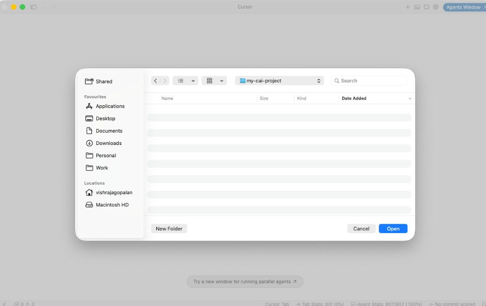
2. Clone the connection repository¶
Open the integrated terminal (View → Terminal or **Ctrl+**) and clone this repository:
You should see README.md, connect-cai.env.example, and connect-cursor-cai.sh.
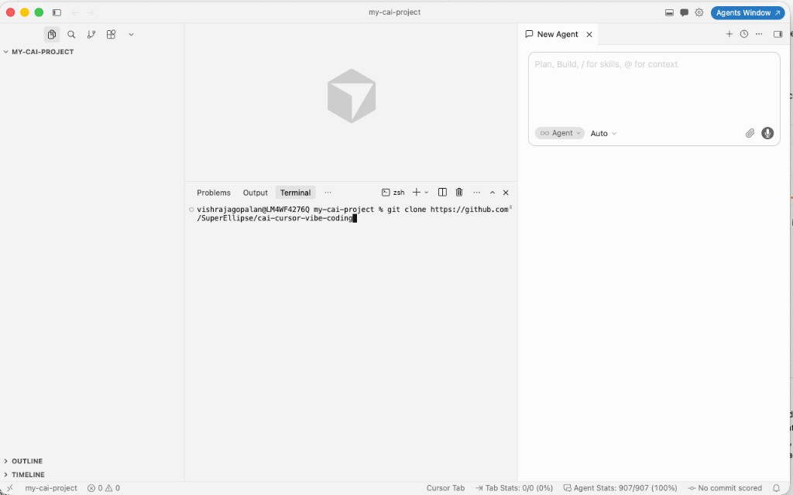
3. Create your environment file¶
Copy the example environment file and open it for editing:
You can use any editor (nano, vim, or Cursor's file explorer).
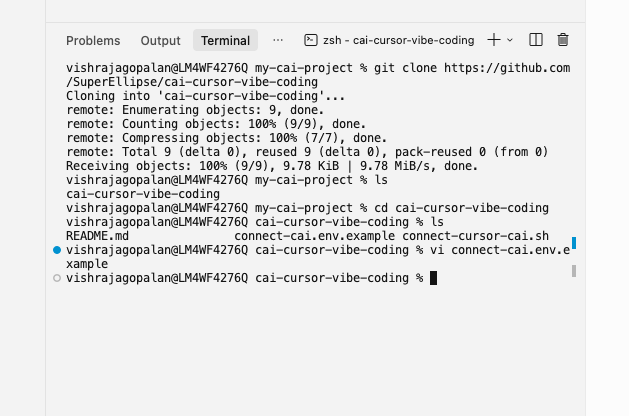
4. Update configuration values¶
Edit connect-cai.env and set the mandatory values:
| Variable | Description | Example |
|---|---|---|
CAI_DOMAIN |
Cloudera AI workbench URL from your browser | https://ml-xxxx.cloudera.site |
CAI_USERNAME |
Your Cloudera AI username | vishrajagopalan |
API_KEY |
API key from User Settings → Keys & Access → API Keys | your-api-key |
PROJECT_NAME |
Full project slug: <username>/<project-name> |
vishrajagopalan/vibe-coding-demo |
PROJECT_NAME must be the full slug
Use <CAI_USERNAME>/<project-name>, not just the project name. For team projects, use the owner slug from the browser URL (e.g. team-owner/shared-project).
Optional overrides (CPU, memory, GPU, Spark) are documented in connect-cai.env.example.
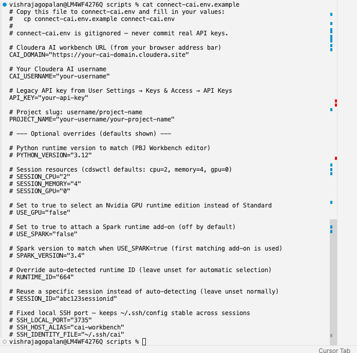
5. Run the connection script¶
Run the script, pointing it at your environment file:
You can also use a differently named file (for example, ./my.cai.env.demo):
The script will:
- Verify prerequisites (
cdswctl,jq, SSH key, API key, project slug) - Log in to Cloudera AI
- Auto-select a PBJ Workbench runtime (Python 3.12, Standard edition)
- Start or reuse a running session
- Update
~/.ssh/configand start the SSH tunnel
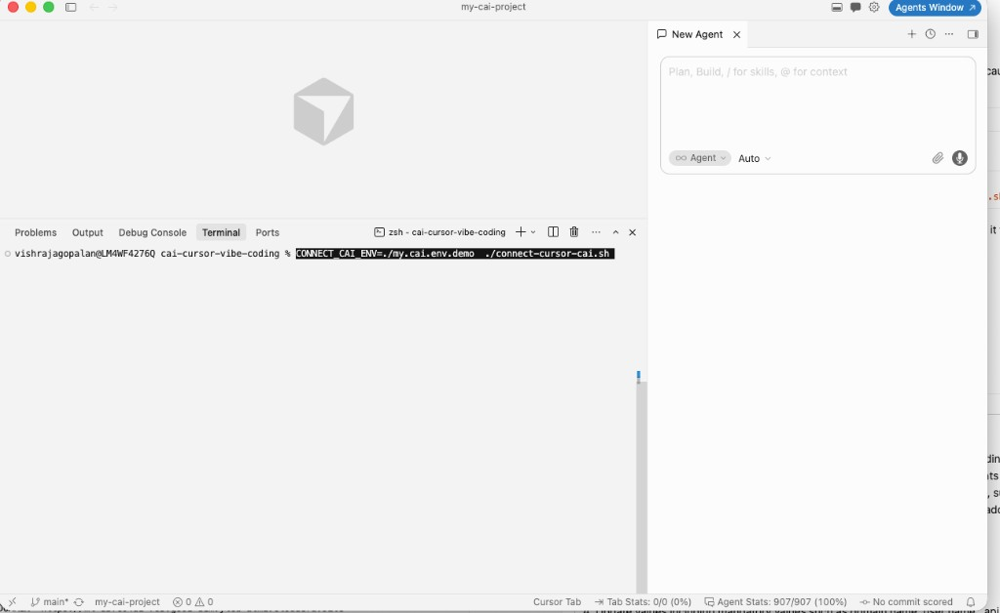
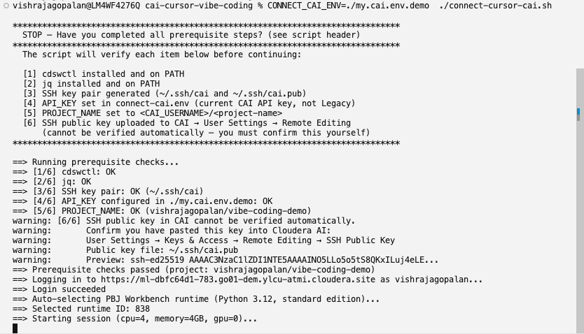
6. Verify the session is running remotely¶
Open your Cloudera AI Workbench in the browser and navigate to Project → Sessions. Confirm that a session is Running.
Session startup may take time
Starting a session depends on available cluster resources and quotas. If the session stays in a pending state, check with your administrator or try again later.
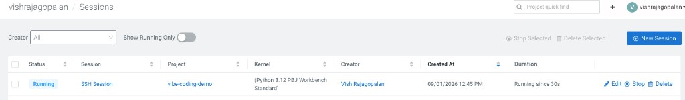
7. Confirm the SSH tunnel is active¶
Return to the terminal where the script is running. You should see output confirming the tunnel is active, along with next-step instructions:
- Local port forwarding (e.g. port
3735→ remote port2222) - SSH tunnel is active — keep this terminal open
- Steps to connect in Cursor
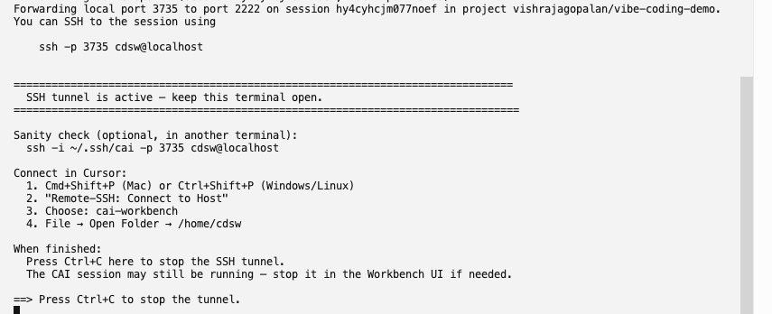
8. Verify SSH works (optional sanity check)¶
Open a second terminal (locally, not the tunnel terminal) and test the SSH connection:
A successful connection changes your prompt to something like cdsw@<session-id>:~$. Type exit to disconnect.
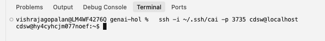
9. Connect to the host in Cursor¶
In Cursor (your local window, not the remote one):
- Press Cmd+Shift+P (Mac) or Ctrl+Shift+P (Windows/Linux)
- Select Remote-SSH: Connect to Host
- Choose
cai-workbench
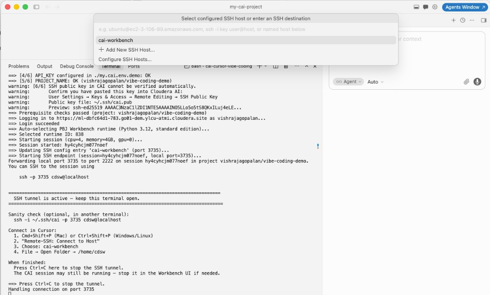
10. Open the remote folder¶
After Cursor connects, open the remote workbench directory:
File → Open Folder → /home/cdsw
You should see the remote file structure (.cache, .cursor, main.py, etc.) in the sidebar. The window title will show cdsw [SSH: cai-workbench] and the status bar will display SSH: cai-workbench.
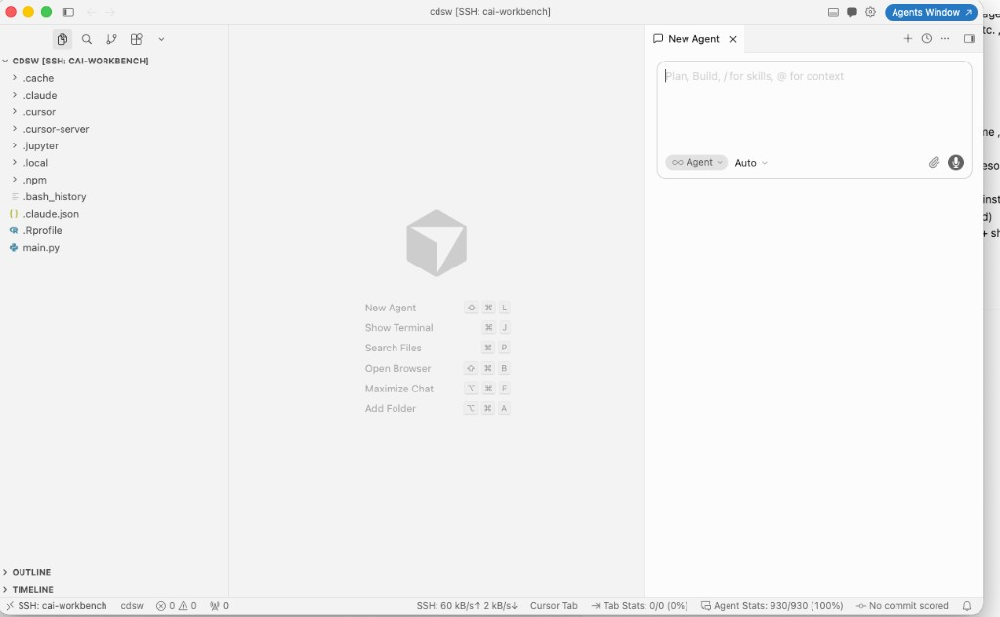
When you are done¶
- Press Ctrl+C in the terminal running the connection script to stop the SSH tunnel.
- The CAI session may still be running — stop it in the Workbench UI under Sessions if you want to free resources.
Troubleshooting¶
| Issue | What to check |
|---|---|
| Login fails with 401 | Use a current API key (not Legacy). Create a new key under API Keys. |
| SSH connection refused | Ensure the tunnel terminal is still open and the script reported success. |
PROJECT_NAME error |
Must be full slug: <username>/<project-name>. |
| Session won't start | Check cluster quotas and resource availability in the CAI UI. |
| SSH key rejected | Confirm ~/.ssh/cai.pub is added under Remote Editing in CAI user settings. |
For more detail, see the repository README or the original setup guide.